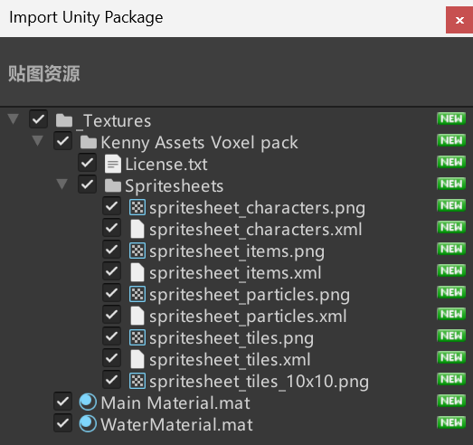
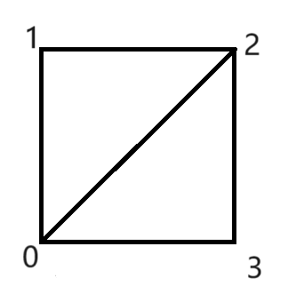
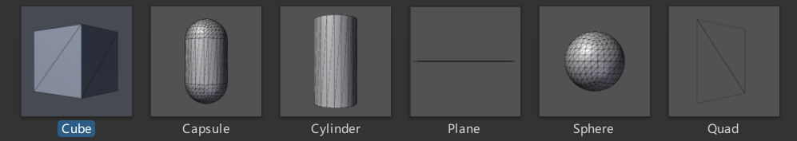
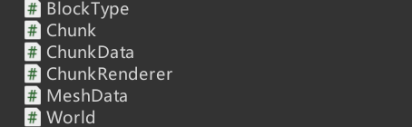
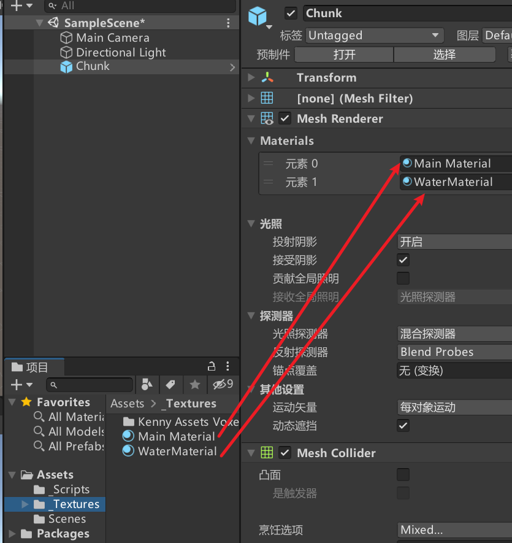
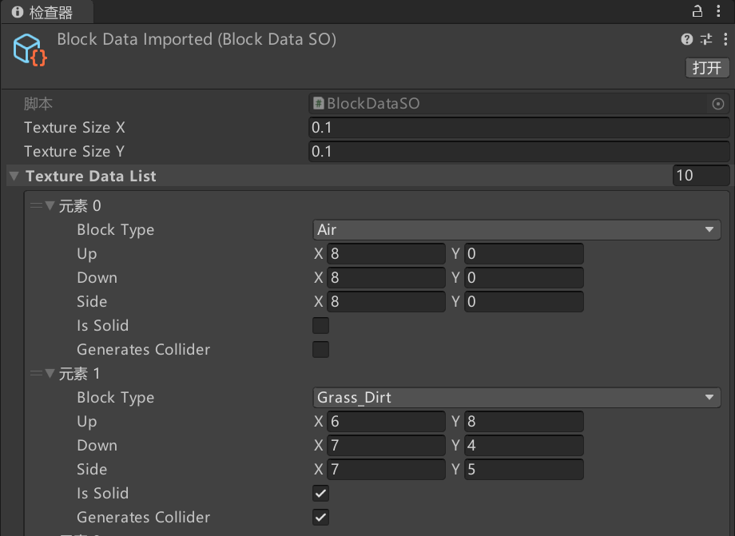
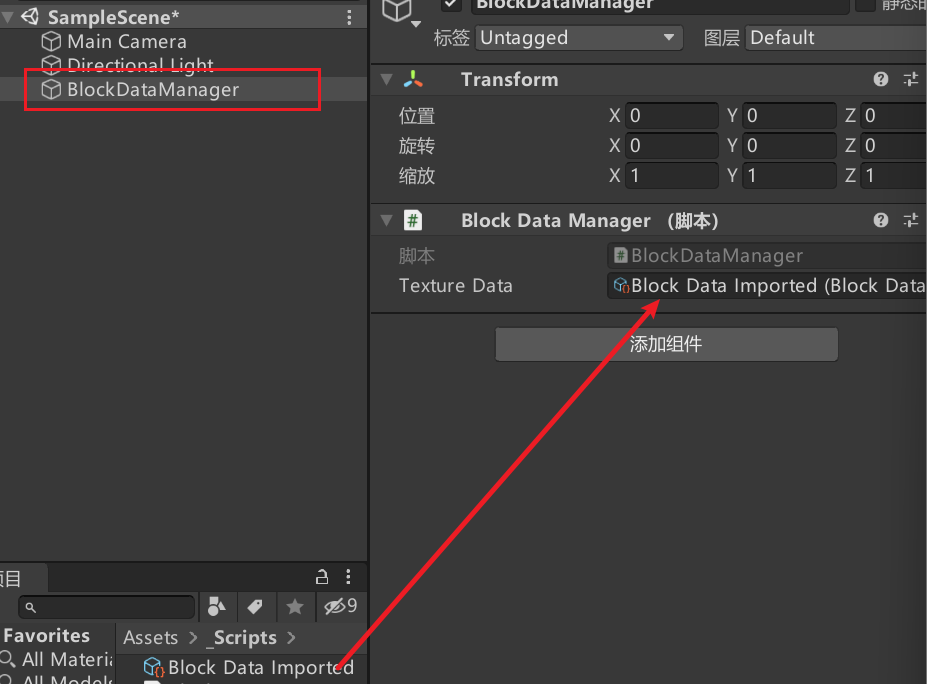
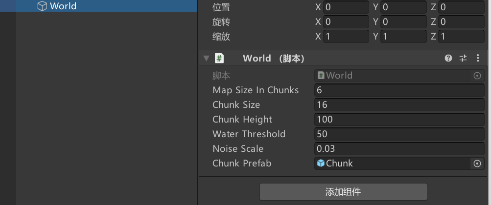
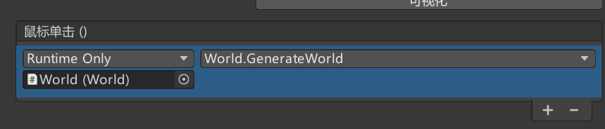
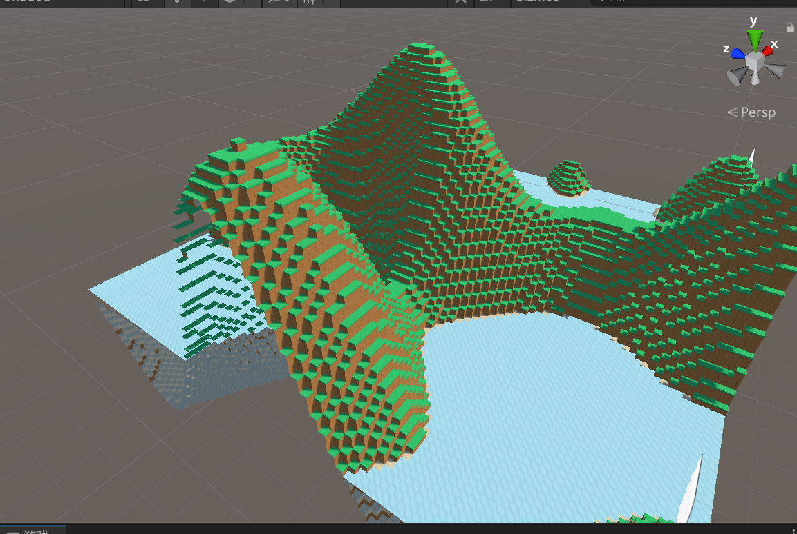

使用Unity创建一个类似MC的游戏场景（一）
前言
使用Unity来制作一个类似Minecraft的游戏场景。这个系列的文章将记录我制作这个游戏场景的过程。
我们首先将建立一个体素引擎，用于生成游戏中的区块（chunk）
准备工作
首先，我们需要准备一些工具和资源。
在这个系列的文章中，我们将使用Unity 2020.3.48f1c1版本，以及一些免费的资源。
贴图资源Voxel Pack · Kenney的原始地址点此下载贴图包
导入贴图包
点击
资源->导入包->自定义包
选择下载的unity资源包进行导入

编写代码
首先在我们Untiy的Assets文件夹下创建一个**_Scripts**文件夹，用于存储我们的所有代码。
1
2
3
4Assets
-- _Scripts //代码
-- _Textures //贴图
-- Scense //场景
定义方块类型
在**_Scripts下创建BlockType.cs**脚本，用于定义游戏中的方块类型。
1 | using System.Collections; |
虽然定义了这么多类型的方块，但是暂时不会全部用到。
定义区块基础信息
在**_Scripts下创建ChunkData.cs**脚本，用于定义游戏中的区块信息。
1 | // 用于管理和存储一个区块（Chunk）中的所有方块数据，以及区块的相关信息。 |
写完代码我们发现World并没有创建，为了暂时解决报错，我们在_Scripts下创建World.cs脚本。
这样报错就解决了。
MeshData数据类
在**_Scripts下创建MeshData.cs**脚本用于存储和管理一个区块的网格数据。
包括用于渲染的顶点、三角形和UV坐标，以及用于物理碰撞的独立碰撞体网格数据。还有水网格的独立管理。
在游戏中，Mesh 是所有 3D 对象的基础。通过调整
Mesh
的顶点和三角形，可以创建各种形状的物体。Mesh 数据可以通过
Unity 的渲染系统显示在屏幕上，并且可以通过物理系统进行碰撞检测。
1 | using System.Collections; |
AddQuadTriangles方法所构成的面：

此外，我们的三角形是顺时针绘制出的，这将决定面的法线方向。法线方向又将决定绘制的面，从那个方向是可见的。
所以说绘制的顺序很重要。
Mash是什么
我们在Unity场景中，所有能被渲染出来的物体都会带有网格Mash。

从概念上讲，网格是图形硬件用来绘制复杂内容的构造。
它至少包含一组定义3D空间中点的顶点，以及一组连接这些点的三角形，实际上还包含法线、顶点颜色纹理坐标（uv）等信息，这些三角形构成了网格所代表的任何表面。
所以创建一个Mesh，就是new一个Mesh，给它塞入顶点坐标、UV坐标和三角形序列即可。再复杂的网格也可以通过这些步骤创建出来~
ChunkRenderer类
接下来我们将区块的数据转化为网格数据，然后渲染成3D对象。
在_Scripts下创建ChunkRenderer.cs用于渲染和更新区块。
1 | using System.Collections; |
在 Unity 中，MeshFilter、MeshRenderer 和
MeshCollider 是与 3D
对象的渲染和物理交互密切相关的组件。
MeshFilter 提供了对象的几何数据。
MeshRenderer
负责将几何数据渲染到屏幕上，使其在游戏中可见。
MeshCollider
使用几何数据来进行物理碰撞检测，使对象能够与其他物理对象互动。
OK，我们发现Chunk目前还在报红
我们可以在_Scripts下创建Chunk.cs,并添加一下内容，暂时解决报错。
1 | using System; |
Chunk
检查一下我们的代码，应该有以下几个文件：

现在新建一个名为Chunk的空对象，并将ChunkRenderer.cs附加到该对象上。
如图，依次添加材质，并将Chunk设置为预设体。

Chunk类
1 | using System; |
BlockDataSO
创建一个ScriptableObject 类，用于存储和管理块的纹理和碰撞相关数据。
通过 textureDataList 可以保存多个块的纹理信息。
1 | using System; |
然后我们新建一个BlockData给每个方块设置贴图：

Up、Down、Side就分别对应了方块的上面，下面和侧面的贴图在下面这张图片上的位置坐标。
BlockDataManager
负责管理和访问块的纹理数据。通过该类，可以在整个游戏中方便地获取和使用块的纹理信息。
1 | using System.Collections; |
然后再Unity中创建BlockDataManager添加BlockDataManager.cs脚本，并将贴图数据赋予Texture Data。

Direction
1 | // 定义块的方向 |
Direction 枚举:
用于表示方块在三维空间中的方向。这在处理方块的相对方向或在三维空间中进行方向操作时非常有用。
DirectionExtensions
为 Direction 枚举提供了额外的功能：将方向转换为对应的
Vector3Int。
1 | using System; |
BlockHelper
根据块的类型和相邻块的类型，生成块的网格数据。
负责为体素生成正确的几何形状和纹理坐标，并确定哪些面应该被渲染。
1 | using System.Collections; |
World
通过 GenerateWorld
方法，可以一次性生成整个地图，并将每个区块对象添加到场景中。
1 | using System; |
GenerateWorld 方法:
- 负责生成整个世界。它先清空已有的数据和区块对象，然后为每个区块生成体素数据，并实例化对应的区块对象。每个区块数据都存储在
chunkDataDictionary中，而对应的渲染器则存储在chunkDictionary中。
GenerateVoxels 方法:
- 生成每个区块中的体素数据。通过
Perlin噪声生成地形的高度，并根据高度和水阈值确定每个体素的类型（如土块、草块、沙块、水、空气等）。
chunkDataDictionary 和
chunkDictionary:
- 前者存储生成的区块数据，后者存储生成的区块渲染器对象。这些字典方便管理和访问生成的世界数据和区块对象。
PerlinNoise:
- 使用
Perlin噪声生成的地形高度模拟了自然地形的起伏，生成逼真的地形效果。
完善Chunk
在上面的代码中使用了GetChunkMeshData方法，如果你还记得该方法的实现，你会发现实现并不完整。
1 | // 获取区块的网格数据 |
现在我们来完善它：
1 | public static MeshData GetChunkMeshData(ChunkData chunkData) |
然后，还有`GetBlockFromChunkCoordinates没有实现。
1 | // 获取相邻块的类型 |
我们进继续在Chunk类中完善：
1 | public static BlockType GetBlockFromChunkCoordinates(ChunkData chunkData, int x, int y, int z) |
完善World
继续实现上面代码中的`GetBlockFromChunkCoordinates方法
1 | internal BlockType GetBlockFromChunkCoordinates(ChunkData chunkData, int x, int y, int z) |
完善Chunk
最后实现完成最后一段代码：
1 | internal static Vector3Int ChunkPositionFromBlockCoords(World world, int x, int y, int z) |
运行一下
最后，我们创建一个名为World的空对象，并添加World脚本,
设置Chunk Prefab 添加Chunk 预设体。

然后创建一个按钮。如下图所示，添加一个点击事件。

点击运行，再次点击按钮，你应该在游戏运行窗口看到以下画面：

下一步我们将生成更大更复杂的地形。
下面有请ChatGPT做总结
类与调用关系概述
在项目中定义了多个核心类和脚本，这些类和脚本共同协作以实现 Minecraft 风格的体素世界生成与渲染。以下是每个类的作用及其相互之间的调用关系。
1. BlockDataImported
- 作用: 这个类或结构体通常用于加载和管理从外部资源（如 JSON 文件或其他数据格式）导入的方块数据。它是数据的输入来源。
- 调用关系: 通过
BlockDataManager进行管理，并将数据加载到游戏内。
2. BlockDataManager
- 作用:
管理所有方块的数据，包括每个方块的纹理信息、碰撞检测、是否是固体等属性。它使用
BlockDataSO来存储这些数据。 - 调用关系: 被
BlockHelper、Chunk等类调用，用于获取特定方块的数据，比如纹理、是否生成碰撞体等。
3. BlockDataSO
- 作用: ScriptableObject 用于在 Unity 编辑器中管理和配置方块数据，允许设计师在编辑器中直观地配置方块属性。
- 调用关系: 被
BlockDataManager使用以统一管理方块数据。
4. BlockHelper
- 作用: 提供与方块相关的辅助方法，例如获取方块的网格数据、计算相邻方块的位置、生成特定方向的面、计算 UV 坐标等。
- 调用关系: 被
Chunk类调用，用于生成每个块的网格数据。
5. BlockType
- 作用: 枚举（enum）或类，用于定义游戏中所有可用的方块类型，如空气、草地、石头、水等。
- 调用关系: 通过
Chunk和BlockHelper被大量使用，定义每个块的类型，并决定其外观和行为。
6. Chunk
- 作用: 表示世界中的一个区块，包含一个块的集合，管理区块内的块数据，生成并返回区块的网格数据。
- 调用关系: 负责调用
BlockHelper生成区块的网格数据，并与ChunkRenderer协作渲染区块。
7. ChunkData
- 作用: 存储特定区块的所有数据，包括每个块的类型、位置、以及区块的世界位置等。
- 调用关系:
Chunk使用ChunkData来访问和修改区块的具体数据。World类生成世界时，也使用ChunkData来管理每个区块的数据。
8. ChunkRenderer
- 作用: 负责渲染区块，管理区块的 Mesh 组件，将生成的网格数据应用到 Unity 的 Mesh 上以进行渲染。
- 调用关系:
World生成世界时，会实例化ChunkRenderer，并使用它来显示生成的区块。
9. Direction
- 作用: 枚举类，用于定义可能的方向，如上、下、左、右、前、后，表示方块的六个面。
- 调用关系: 被
BlockHelper和Chunk使用，用于确定方块的方向并生成相应的面。
10. DirectionExtensions
- 作用: 提供扩展方法，用于从
Direction枚举中获取方向向量，帮助确定方块在某个方向上的相邻方块位置。 - 调用关系: 被
BlockHelper调用，用于计算相邻方块的位置。
11. MeshData
- 作用: 存储生成的网格数据，包括顶点、三角形、UV 坐标等，最终用于构建区块的 Mesh。
- 调用关系: 被
BlockHelper和Chunk使用，生成方块和区块的网格数据。
12. World
- 作用: 管理整个体素世界的生成、维护和渲染，生成多个区块，并组织它们形成完整的世界。
- 调用关系: 生成并管理
Chunk和ChunkRenderer，负责大规模的世界生成逻辑，并与BlockDataManager、ChunkData协作处理方块和区块的数据。
调用关系图（概念化）
1 | +-------------------+ |
这些类和脚本的设计紧密合作以实现体素世界的生成和渲染。在这个系统中，World
类负责管理整个世界的生成和维护；Chunk 和
ChunkData 管理区块的数据与生成；BlockHelper 和
MeshData 则负责具体的网格数据生成和处理；而
BlockDataManager 和 BlockType
则集中管理方块的具体属性和行为。每个类各司其职，共同协作构建一个复杂且可扩展的体素世界系统。